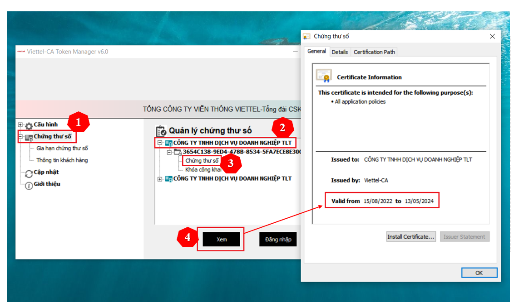

NGHIỆP VỤ VIETTEL-CA
Cấp bù Chữ ký số Viettel CA
Chữ ký số Viettel (Viettel CA) được cung cấp bởi Tập Đoàn Công Nghiệp – Viễn Thông Quân Đội (Viettel). Nếu chữ ký số của bạn đang hiển thị ngày hết hạn là 13/05/2024 thì chữ ký số của bạn đang bị giới hạn thời gian mà Viettel được Bộ Thông Tin và Truyền Thông cấp phép (13/05/2019 – 13/05/2024), như vậy bạn cần thực hiện cấp bù thời hạn cho Chữ ký số để tiếp tục sử dụng.
Cách kiểm trả thời hạn chữ ký số Viettel CA trên Token Manager như sau:
Lưu ý: Đối với Chữ ký số Version 4;5;6 thì bạn sẽ thực hiện cấp bù theo hướng dẫn dưới đây. Đối với Chữ ký số Version 0;1;2;3 thì khi cấp bù xong sẽ không sử dụng được, Bạn có thể kết nối với nhân viên AM để được hỗ trợ đổi USB Token mới.
HƯỚNG DẪN CẤP BÙ THỜI HẠN CHỮ KÝ SỐ VIETTEL CA
Bước 1: Cắm chữ ký số USB TOKEN vào máy tính. Đảm bảo máy tính đã được cài đặt driver của chữ ký số.
Bước 2: Tải và Cài đặt phần mềm cấp bù Chữ ký số. Tải và cài đặt phần mềm cấp bù chứng thư số: Truy cập: http://www.viettel-ca.vn => Hướng dẫn sử dụng => Phần mềm => Phần mềm cấp bù thời hạn chứng thư số Viettel-CA Pro. Hoặc tải trực tiếp phần mềm cấp bù TẠI ĐÂY Ấn tải xuống để tải phần mềm cấp bù về và cài đặt.
Bước 3: Thực hiện cấp bù chữ ký số Viettel CA
Sau khi cài đặt xong phần m ềm cấp bù máy tính sẽ tự động chạy trình duyệt cấ p bù như hình ảnh bên dưới. Nếu không có giao diện này, thì bạ n hãy Click và Icon Viettel-CA Pro 1.0.5 vừa cài đặt thành công để mở giao diện dưới đây.

Tại đây bạn đọc nội dung về việc triển khai cấp bù Chữ ký số và ấn “Bắt đầu” để thực hiện quá trình cấp bù Chữ ký số

Tại giao diện này bạn thực hiện nhập các thông tin như sau:
Bước 1: Chọn USB Token để thực hiện cấp bù
Bước 2: Nhập Mã Pin của Chữ ký số USB Token
Bước 3: Nhập nhân viên hỗ trợ TRUCND_NV_SME_HCM và ấn “Bắt đầu”.

Sau khi nhập đúng thông tin, hệ thống sẽ thực hiện cấp bù Chữ ký số, Bạn lưu ý không được rút USB Token ra khỏi máy tính (Thời gian hệ thống xử lý từ 2 đến 3 phút)

Hệ thống thông báo chứng thư số của Quý Khách đã được cấp bù thành công.

Nhấn OK để xem thời hạn mới của Chứng thư số đã thực hiện Hoàn tất việc cấp bù.

Sau khi đã thực hiện cấp bù thành công, thông tin Chữ ký số của bạn sẽ có ngày hiệu lực tại thời điểm hoàn thành cấp bù. Vì vậy bạn cần thực hiện cập nhập Chữ ký số lên các hệ thống mà bạn đang sử dụng:
Thuế điện tử (Cập nhập và sử dụng được ngay)
Hóa đơn điện tử (Sẽ mất thời gian 24h thuế duyệt mới sử dụng được)
Hải quan điện tử (Cập nhập xong sau 12h đêm mới kê khai được)
Bảo hiểm xã hội điện tử (Cập nhập và sử dụng được ngay)
Hệ thống Ngân hàng, Tài chính….